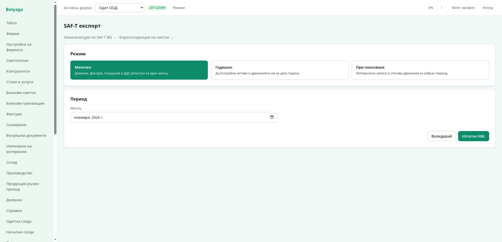

Начало · SAF-T
SAF-T
Одитен файл по BG_SAFT_Schema V1.0.1.
Експорт по официалната XSD на НАП (secret/SAFT_BG): месечен, годишен и при поискване, с месец без плащане пак да пише Payments. Заглавката носи собственици, контакт и банковите сметки. Големите файлове се свалят поточно.
Кореспонденциите свързват Дт/Кт с тип движение (стоки/активи/парични) за складовата част.
